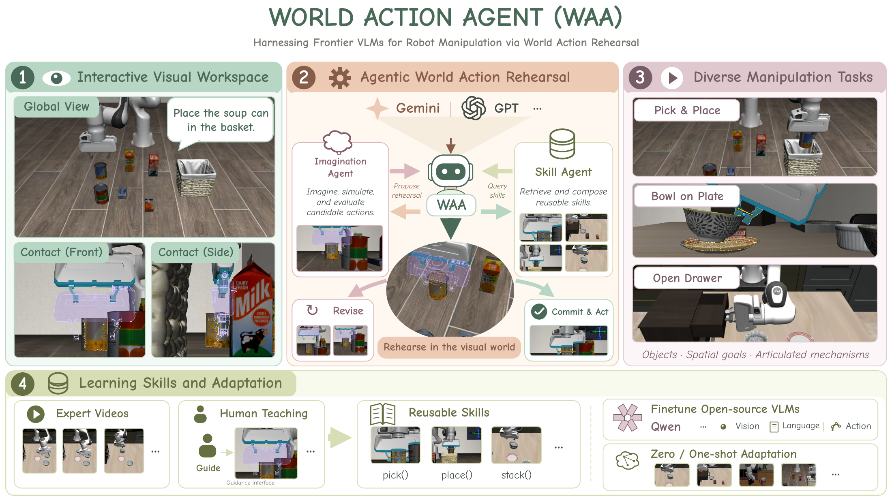
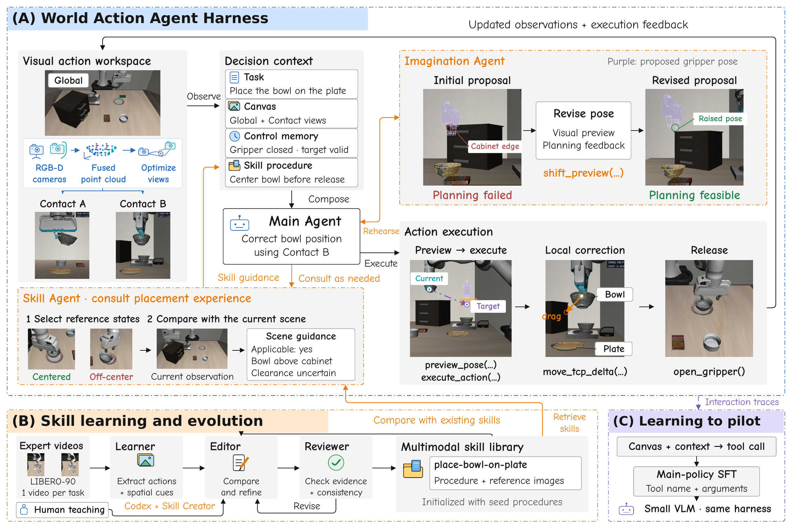
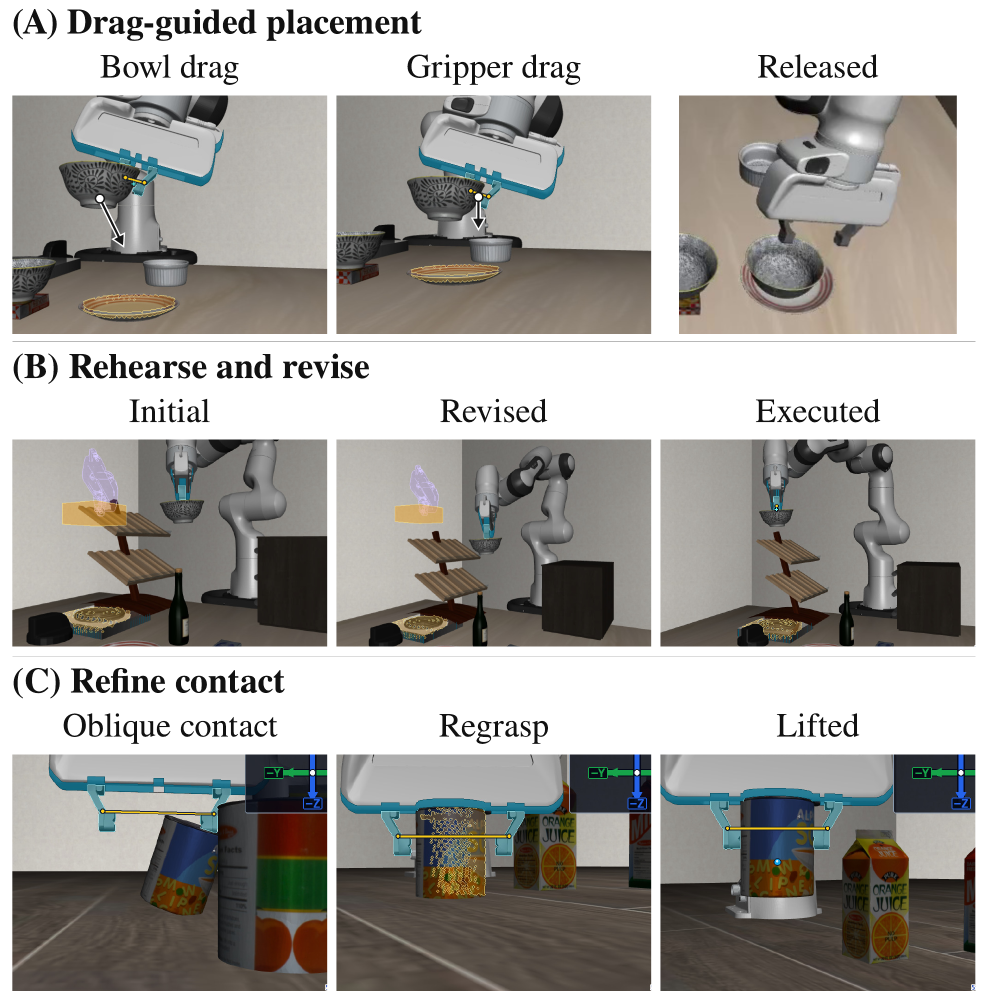

Drag-guided placement
Align the bowl with its target, lower the gripper, and release the bowl onto the plate.
ROBOT LEARNING · VISION-LANGUAGE MODELS
Observe, rehearse, and correct robot actions in one visual workspace.

General-purpose vision-language models bring broad knowledge and spatial reasoning to robot manipulation, yet existing systems either use them indirectly or give them a view of the scene rather than a world in which to act. We present World Action Agent (WAA), a multi-agent harness through which VLMs pilot robots with basic tools, making every decision within a visual action workspace.
Contact views expose local interaction geometry. Action rehearsal lets agents preview and revise proposals before execution. In-view correction closes the loop between observation and action. Through the same workspace, WAA evolves multimodal skills from expert videos and human teaching, and distills interaction traces into smaller VLM pilots.
With skills learned only from LIBERO-90, WAA achieves 75.6% average success on LIBERO-Pro, and transfers the same skills to robosuite without further learning. Fine-tuning Qwen3.5-9B on harness traces raises its out-of-domain success from 1.7% to 43.3%.
THE APPROACH

Automatically selected Contact views reveal local relations between the gripper, object, and target.
Preview and revise an action with visual and planning feedback before committing to physical motion.
Resolve residual offsets directly in the calibrated view where the agent observes them.
IN ACTION

Align the bowl with its target, lower the gripper, and release the bowl onto the plate.
Raise an initially infeasible proposal until planning succeeds, then execute the revised motion.
Use fresh observations to revise an unsuccessful grasp and lift the soup can.
MAIN RESULTS
WAA reaches 75.6% average success with a frozen skill library evolved only from LIBERO-90.
| Method | Object | Goal | Spatial | Avg. | |||
|---|---|---|---|---|---|---|---|
| Pos. | Task | Pos. | Task | Pos. | Task | ||
| OpenVLA | 0.0 | 0.0 | 0.0 | 0.0 | 0.0 | 0.0 | 0.0 |
| π0.5 | 17.0 | 1.0 | 38.0 | 0.0 | 20.0 | 1.0 | 12.8 |
| CaP-Agent0 (CaP-X) | 22.0 | 18.0 | 26.0 | 17.0 | 12.0 | 14.0 | 18.2 |
| CaP-Agent0 (Playful) | 27.0 | 31.0 | 29.0 | 16.0 | 13.0 | 23.0 | 23.2 |
| RATs (Playful) | 61.0 | 63.0 | 43.0 | 36.0 | 29.0 | 31.0 | 43.8 |
| ASPIRE | 98.0 | 95.0 | 81.0 | 45.0 | 51.0 | 60.0 | 72.0 |
| Show-Harness | 13.3 | 16.7 | 0.0 | 10.0 | 0.0 | 0.0 | 6.7 |
| WAA (zero-shot) | 53.3 | 46.7 | 30.0 | 23.3 | 13.3 | 6.7 | 28.9 |
| WAA + seed skills | 83.3 | 70.0 | 26.7 | 40.0 | 16.7 | 23.3 | 43.3 |
| WAA (evolved skills) | 95.0 | 93.3 | 63.3 | 48.3 | 80.0 | 73.3 | 75.6 |
| WAA (evolved skills & RGB-D) | 88.3 | 91.7 | 56.7 | 45.0 | 76.7 | 68.3 | 71.1 |
| WAA (evolved skills & VGGT) | 90.0 | 88.3 | 53.3 | 45.0 | 65.0 | 71.7 | 68.9 |
Pos.: initial-position swaps. Task: task perturbations. WAA uses Gemini 3.7 Flash; each WAA setting is evaluated for 60 episodes per split. The first three WAA rows use scene point clouds; the final two use RGB-D and VGGT reconstruction.
CODE RELEASE
We are actively organizing and documenting the code for release as soon as possible.
@misc{zhang2026worldactionagent,
title = {World Action Agent: Harnessing VLMs for Robot Manipulation via World Action Rehearsal},
author = {Yehang Zhang and Haojian Huang and Yifan Chang and Jianchong Su and Bohan Zhou and Yingjie Xu and Wosong Chen and Tianhao Zhou and Chenxu Wang and Tianyi Zhang and Yangkai Wei and Wenqian Li and Shiyuan Deng and Yinchuan Li and Ying-Cong Chen and Zexi Li},
year = {2026},
eprint = {2609.29964},
archivePrefix = {arXiv},
url = {https://arxiv.org/abs/2609.29964}
}